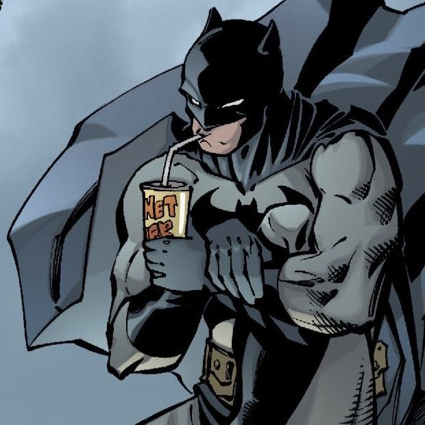

Hey! I'm Amirthavarshini - A beginner exploring web and game development.

About
I’m an aspiring web and game developer with a strong interest in creating interactive and engaging experiences. I’m currently learning HTML, CSS, JavaScript, and basic game development while building projects to strengthen my skills. Currently, I’m learning and improving my skills in HTML, CSS, and JavaScript, along with the fundamentals of game development. I focus on building projects that challenge me and help me understand how things work behind the scenes. I’m particularly interested in designing user-friendly interfaces and creating smooth, responsive interactions. I believe that good design and functionality should go hand in hand to create meaningful experiences.
Projects
VayalMozhi (Farmers App)
Description:
VayalMozhi is an AI-powered application designed to help farmers by providing useful insights and guidance in Tamil. It aims to make technology more accessible and practical for agriculture.
Technologies Used:
Python, AI / Machine Learning (basic), HTML, CSS
What it does:
- Farming related suggestions
- Supports Tamil language users
- Decision-making for farmers
Still Warm Cafe (Restaurant Menu Website)
Description:
Still Warm Cafe is a simple and user-friendly restaurant menu website that displays food items, prices, and categories in a clean layout.
Technologies Used:
HTML, CSS
What it does:
- Displays menu items clearly
- Organized into categories
- Easy to navigate design